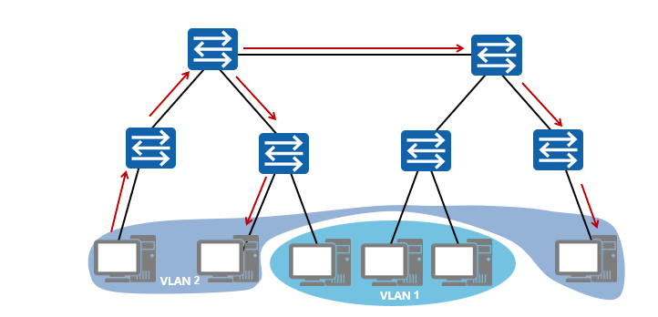
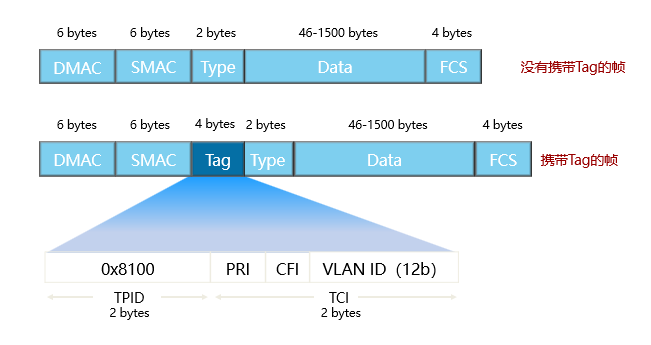
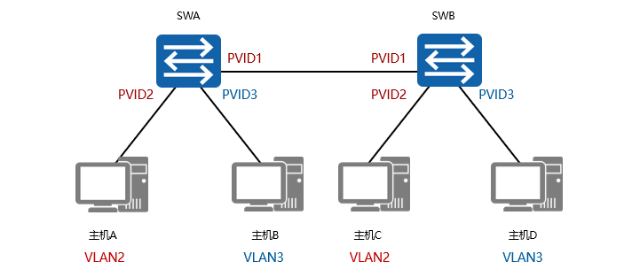
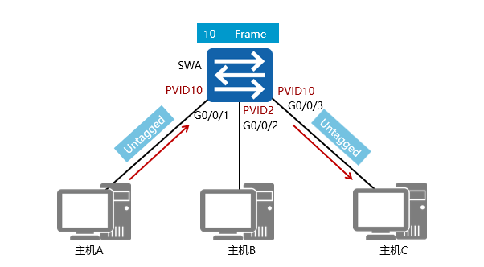
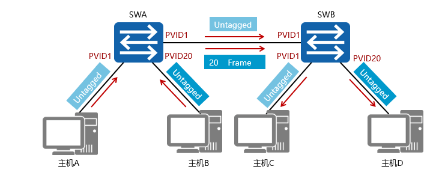
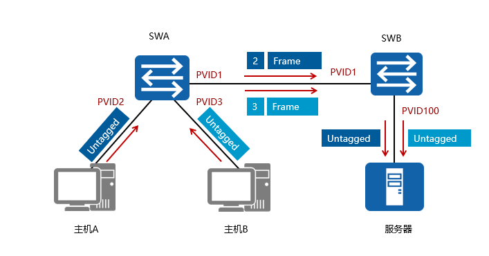

vlan基本原理
早期的局域网LAN技术是基于总线型结构的，它存在以下主要问题：
若某时刻有多个节点同时试图发送消息，那么它们将产生冲突。
从任意节点发出的消息都会被发送到其他节点，形成广播。
所有主机共享一条传输通道，无法控制网络中的信息安全。
这种网络构成了一个冲突域，网络中计算机数量越多，冲突越严重，网络效率越低。同时，该网络也是一个广播域，当网络中发送信息的计算机数量变多时，广播流量将会耗费大量带宽。
因此，传统局域网不仅面临冲突域太大和广播域太大两大难题，而且无法保障传输信息的安全。
为了扩展传统LAN，以接入更多计算机，同时避免冲突的恶化，出现了网桥和二层交换机，它们能有效隔离冲突域。网桥和交换机采用交换方式将来自入端口的信息转发到出端口上，克服了共享网络中的冲突问题。但是，采用交换机进行组网时，广播域和信息安全问题依旧存在。
为限制广播域的范围，减少广播流量，需要在没有二层互访需求的主机之间进行隔离。路由器是基于三层IP地址信息来选择路由和转发数据的，其连接两个网段时可以有效抑制广播报文的转发，但成本较高。因此，人们设想在物理局域网上构建多个逻辑局域网，即VLAN。


VLAN技术可以将一个物理局域网在逻辑上划分成多个广播域，也就是多个VLAN。VLAN技术部署在数据链路层，用于隔离二层流量。同一个VLAN内的主机共享同一个广播域，它们之间可以直接进行二层通信。而VLAN间的主机属于不同的广播域，不能直接实现二层互通。这样，广播报文就被限制在各个相应的VLAN内，同时也提高了网络安全性。
VLAN标签长4个字节，直接添加在以太网帧头中，IEEE802.1Q文档对VLAN标签作出了说明。
TPID：Tag Protocol Identifier，2字节，固定取值，0x8100，是IEEE定义的新类型，表明这是一个携带802.1Q标签的帧。如果不支持802.1Q的设备收到这样的帧，会将其丢弃。
TCI：Tag Control Information，2字节。帧的控制信息，详细说明如下：
Priority：3比特，表示帧的优先级，取值范围为0～7，值越大优先级越高。当交换机阻塞时，优先发送优先级高的数据帧。
CFI：Canonical Format Indicator，1比特。CFI表示MAC地址是否是经典格式。CFI为0说明是经典格式，CFI为1表示为非经典格式。用于区分以太网帧、FDDI（Fiber Distributed Digital Interface）帧和令牌环网帧。在以太网中，CFI的值为0。
VLAN Identifier：VLAN ID，12比特，在X7系列交换机中，可配置的VLAN ID取值范围为0～4095，但是0和4095在协议中规定为保留的VLAN ID，不能给用户使用。
在现有的交换网络环境中，以太网的帧有两种格式：
没有加上VLAN标记的标准以太网帧（untagged frame）；有VLAN标记的以太网帧（tagged frame）。

PVID即Port VLAN ID，代表端口的缺省VLAN。交换机从对端设备收到的帧有可能是Untagged的数据帧，但所有以太网帧在交换机中都是以Tagged的形式来被处理和转发的，因此交换机必须给端口收到的Untagged数据帧添加上Tag。为了实现此目的，必须为交换机配置端口的缺省VLAN。当该端口收到Untagged数据帧时，交换机将给它加上该缺省VLAN的VLAN Tag。

交换机的G0/0/1，G0/0/2，G0/0/3端口分别连接三台主机，都配置为Access端口。主机A把数据帧（未加标签）发送到交换机的G0/0/1端口，再由交换机发往其他目的地。收到数据帧之后，交换机根据端口的PVID给数据帧打上VLAN标签10，然后决定从G0/0/3端口转发数据帧。G0/0/3端口的PVID也是10，与VLAN标签中的VLAN ID相同，交换机移除标签，把数据帧发送到主机C。连接主机B的端口的PVID是2，与VLAN10不属于同一个VLAN，因此此端口不会接收到VLAN10的数据帧。

当Trunk端口收到帧时，如果该帧不包含Tag，将添加上端口的PVID；如果该帧包含Tag，则不改变。
当Trunk端口发送帧时，该帧的VLAN ID在Trunk的允许发送列表中：若与端口的PVID相同时，则剥离Tag发送；若与端口的PVID不同时，则直接发送。

本例介绍了主机A和主机B发送数据给服务器的情况。在SWA和SWB互连的端口上配置了port hybrid tagged vlan 2 3 100命令后，SWA和SWB之间的链路上传输的都是带Tag标签的数据帧。在SWB连接服务器的端口上配置了port hybrid untagged vlan 2 3，主机A和主机B发送的数据会被剥离VLAN标签后转发到服务器。
Hybrid端口既可以连接主机，又可以连接交换机。
Hybrid端口可以以Tagged 或Untagged方式加入VLAN.比如上图，要求主机A和主机B都能访问服务器，但是它们之间不能互相访问。此时交换机连接主机和服务器的端口，以及交换机互连的端口都配置为Hybrid类型。交换机连接主机A的端口的PVID是2，连接主机B的端口的PVID是3，连接服务器的端口的PVID是100。
当接收到对端设备发送的不带Tag的数据帧时，会添加该端口的PVID，如果PVID在允许通过的VLAN ID列表中，则接收该报文，否则丢弃该报文。当接收到对端设备发送的带Tag的数据帧时，检查VLAN ID是否在允许通过的VLAN ID列表中。如果VLAN ID在接口允许通过的VLAN ID列表中，则接收该报文，否则丢弃该报文。
Hybrid端口发送数据帧时，将检查该接口是否允许该VLAN数据帧通过。如果允许通过，则可以通过命令配置发送时是否携带Tag。
配置port hybrid tagged vlan vlan-id命令后，接口发送该vlan-id的数据帧时，不剥离帧中的VLAN Tag，直接发送。该命令一般配置在连接交换机的端口上。
配置port hybrid untagged vlan vlan-id命令后，接口在发送vlan-id的数据帧时，会将帧中的VLAN Tag剥离掉再发送出去。该命令一般配置在连接主机的端口上。